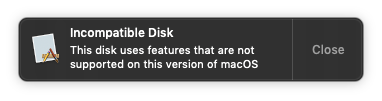
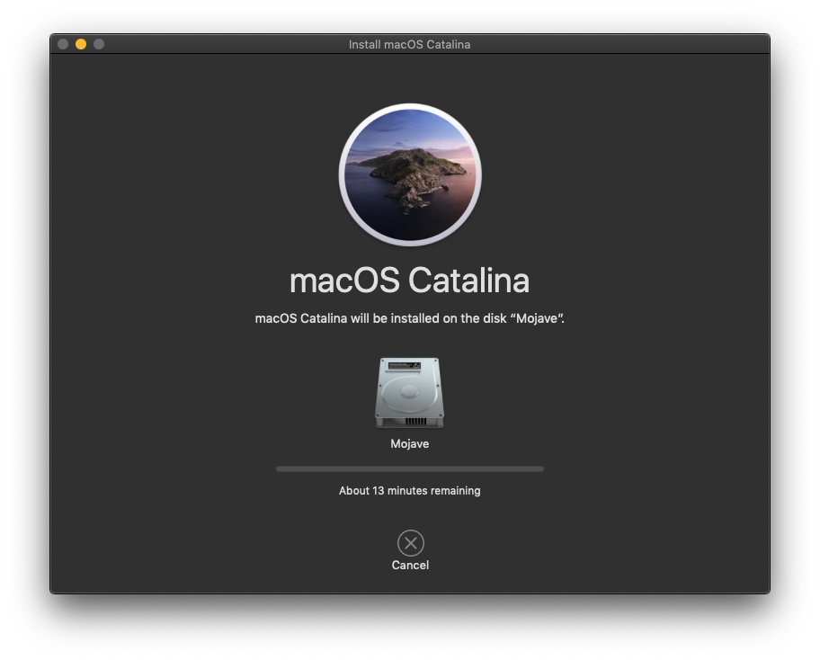

Hackintosh Log #2
September 5, 2021
Edited: September 29, 2021
Hi again, this is the second log of my Hackintosh. This will be a shorter post though, as I've done not a lot.
Multi-Booting
I was thinking of installing Big Sur and Catalina to another drive, to which I did. Everything was fine but, when you boot to Mojave you would get this pop-up.

Notification on Mojave after installing Catalina & Big Sur
Saddly, I had to erase Catalina and Big Sur to erase the issue.
Upgrading
For a while I was thinking to upgrade Mojave to Catalina or Big Sur, as I wanted to get features newer versions of macOS has.
But thought it could be a grave mistake to do since it *may* break things on Mojave. But decided to take the risk with absolutely NO Time Machine backups or any backups.

Upgrading macOS Mojave to Catalina
After staring at the progress bar for 30 minutes, I booted to Catalina with no issues. And even better, nothing broke from the upgrade.

About my Mac, now with Catalina!
Fixing issues
One of the issues i've had with OpenCore was getting an error every time at boot.
00:000 00:000 OC: Failed to drop ACPI 54445353 0074734930757043 0 (1) - Not Found
Which was a minor issue, but still wanted to remove it. Fortunately, I was able to fix it by disabling Delete Cpu0Ist and Delete CpuPm on config.plist.
Unfortunately, I'm not able to get WI-FI working with the current card i'm using. Though, I could buy another card that will work with macOS.

Current macOS Catalina setup.
Closure
So far, not lot has happened since the last Hackintosh log, though i'll try do my best to make another log with more stuff i've done with my Hackintosh.